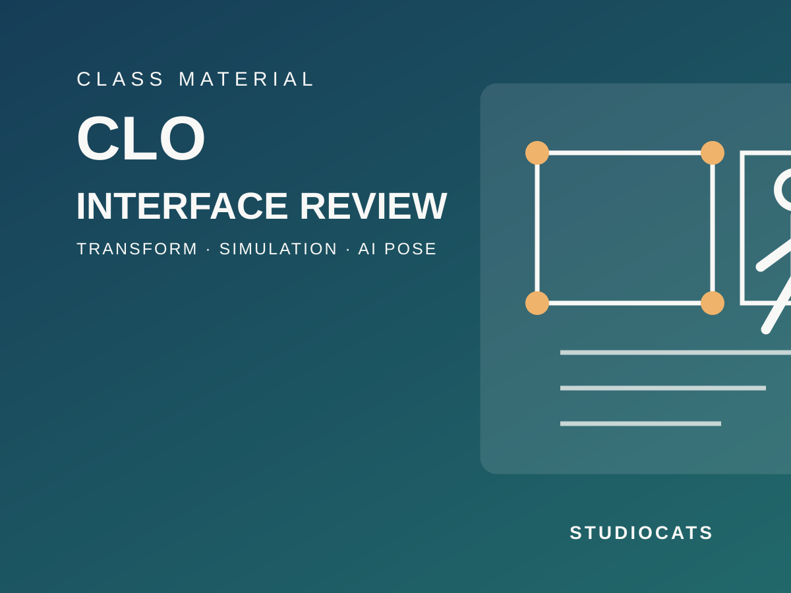

CLO 기본 복습: 인터페이스·패턴 Transform·AI Pose
2026.09.07
CLO의 2D·3D 작업 화면과 Object Browser, Property Editor의 역할을 복습하고 시뮬레이션·아바타·원단 속성을 구분해 확인합니다. 이어서 Transform Pattern과 AI Pose Generator를 활용해 수업용 패턴 변형과 정지 포즈를 완성합니다. 귀걸이 제작은 재질 변화를 확인하는 짧은 응용으로 진행합니다.
이번 수업은 CLO에서 결과를 빠르게 확인하기 전에 필요한 화면 구조와 속성의 역할을 정리하는 기초 복습입니다. 메뉴를 외우기보다, 무엇을 선택한 뒤 어느 패널에서 값을 확인하는지 익히는 것을 목표로 합니다.
수업 결과물
수업 종료 전 아래 세 가지를 준비합니다. ① Transform Pattern으로 변형한 패턴이 포함된 .zprj, ② AI Pose Generator로 저장한 정지 포즈 .pos, ③ 시뮬레이션·아바타·원단 속성을 확인한 화면 캡처 2장. 파일명은 W02_이름_basic-review.zprj, W02_이름_pose01.pos 형식으로 저장합니다.
1. 인터페이스와 메뉴의 역할
2D Pattern Window에서는 패턴의 형태와 배치를 다루고, 3D Garment Window에서는 아바타 위 의상과 시뮬레이션 결과를 확인합니다. Object Browser는 Scene·Fabric 등 현재 프로젝트의 대상을 찾는 곳이고, Property Editor는 선택한 대상의 세부 값을 확인하거나 조정하는 곳입니다. 같은 Property Editor라도 무엇을 선택했는지에 따라 표시되는 항목이 달라집니다.
선택 → 탐색 → 속성 확인의 순서
수업에서는 항상 ① 2D 또는 3D 화면에서 대상 선택, ② Object Browser에서 대상 위치 확인, ③ Property Editor에서 현재 값을 읽기 순서로 작업합니다. 패턴을 선택했는데 아바타 값이 보이지 않거나, 원단을 바꾸려는데 화면 재질 값이 보이지 않을 때는 먼저 선택 대상과 Object Browser 탭을 다시 확인합니다.
2. Simulation Properties: 프로젝트 전체 시뮬레이션 확인
시뮬레이션 설정은 Object Browser > Scene > Environment > Simulation Properties에서 열고 Property Editor에서 확인합니다. Preset에는 Normal, Fitting, GPU가 있으며, 기본값을 먼저 기준으로 사용합니다. Time Step은 작게 설정할수록 계산 정확도는 높아지지만 시간이 더 걸릴 수 있고, Number of Simulation은 충돌 안정성에 영향을 주지만 계산 시간이 늘어날 수 있습니다.
시뮬레이션 확인 실습
Simulation Properties를 열어 Preset, Time Step, Number of Simulation, Gravity, Avatar Collision, Cloth Collision의 위치를 확인합니다. 이번 단계에서는 임의의 수치를 추가로 바꾸지 않습니다. 기본 설정으로 한 번 시뮬레이션한 뒤, 충돌이 불안정한 경우에만 어떤 항목을 확인해야 하는지 기록합니다.
3. Avatar Properties: 아바타와 의상의 간격 확인
3D 의상 > 선택/이동(Q) 도구로 아바타를 클릭하면 Property Editor에서 Avatar Properties를 확인할 수 있습니다. Surface Distance는 아바타 표면과 의상 사이의 기본 간격이며, 값이 너무 낮고 의상 Particle Distance까지 낮으면 시뮬레이션 시간이 길어질 수 있습니다. Static Friction과 Dynamic Friction은 드레이핑·애니메이션 중 의상이 아바타 표면에서 미끄러지는 정도와 관련된 값입니다. 이번 수업에서는 값의 위치와 역할을 확인하고, 필요할 때만 최종 피팅 단계에서 조정합니다.
4. Fabric 적용: 패턴에 원단을 연결하기
Object Browser의 Fabric 탭에서 원단을 추가하거나 라이브러리 원단을 불러온 뒤, 패턴에 적용합니다. 패턴을 먼저 선택하고 Fabric 탭의 원단을 적용하거나, 원단을 패턴 위로 드래그하는 방식으로 연결할 수 있습니다. 원단 이름은 용도와 상태가 구분되도록 작성합니다. 예: Fabric_Base, Fabric_Matte, Fabric_Metal.
Fabric Material: 화면에 보이는 재질 설정
Fabric 탭에서 원단을 선택하면 Property Editor의 Material 영역에서 Front, Back, Side 재질을 확인할 수 있습니다. 필요하면 앞·뒤·옆면에 서로 다른 재질을 설정할 수 있습니다. Material Type, Base Color, Normal, Opacity, Roughness, Reflection, Metalness는 화면에서 보이는 표면 표현을 조정하는 항목입니다. 수업에서는 Material Type과 색상·반사 표현을 먼저 비교하고, 이것을 원단의 물리 속성과 구분해서 다룹니다.
Fabric Physical Property: 원단의 움직임과 물성
원단의 물성은 Fabric 탭에서 원단을 선택한 뒤 Property Editor의 Physical Property에서 확인합니다. Preset으로 기본 물성을 적용하고, Detail에서 Stretch-Weft, Stretch-Warp, Shear 등의 세부 항목을 확인합니다. Weft·Warp·Shear는 각각 2D 패턴의 가로·세로·대각 방향 탄성 저항과 관련됩니다. 값은 서로 영향을 줄 수 있으므로 한 번에 여러 값을 바꾸지 말고, 한 항목만 변경한 뒤 시뮬레이션 결과를 비교합니다.
5. Transform Pattern: 기본 패턴 변형
Transform Pattern은 Main Menu > 2D Pattern > Edit > Transform Pattern에서 선택하거나 2D 툴바에서 실행합니다. 이 도구는 패턴 전체를 선택해 이동, 크기 조절, 회전하는 데 사용합니다. 패턴 포인트나 선분 자체를 편집하는 도구가 아니므로, 점·선분 조정이 필요한 경우에는 별도의 Transform Point/Segment 또는 Edit Pattern 도구를 사용합니다.
Transform Pattern 실습 순서
① 기존 패턴 한 장을 선택합니다. ② Transform Pattern으로 드래그하거나 방향키로 위치를 이동합니다. ③ 여러 패턴은 Shift 선택 또는 드래그 선택으로 함께 선택합니다. ④ 선택 가이드를 이용해 크기를 조절하고, 피벗을 더블 클릭한 뒤 회전합니다. ⑤ 정확한 이동 거리가 필요하면 우클릭 또는 F1로 값을 입력합니다. 변형 전·후가 보이도록 2D 화면을 캡처합니다.
6. AI Pose Generator: 수업용 정지 포즈 만들기
AI Pose Generator는 Avatar > AI Pose Generator에서 실행합니다. 성별을 선택한 뒤 짧고 명확한 키워드로 포즈를 요청합니다. 긴 문장보다 포즈·시선·팔 위치처럼 구분된 키워드 목록이 더 적합합니다. 참조 이미지를 사용할 경우 전신이 보이는 이미지를 사용합니다. 생성 결과는 수업용 포즈로 검토한 뒤 .pos 파일로 저장합니다. 이 기능은 Beta이므로 결과와 제공 범위가 변경될 수 있습니다.
AI Pose 실습 기준
아래처럼 한 동작씩 분리해 입력합니다. 예: standing, weight on left leg, one hand at waist, front view. 의상 실루엣을 확인할 수 있는 정면 또는 3/4 시점의 정지 포즈를 1개 선정하고, W02_이름_pose01.pos로 저장합니다. 생성 결과가 의상 확인에 적합하지 않으면 키워드를 바꿔 다시 생성합니다.
짧은 응용: 패턴 귀걸이로 재질 변화 보기
귀걸이 제작은 이번 주의 핵심 결과물이 아니라 Fabric Material과 Physical Property를 구분하는 짧은 응용입니다. 작은 닫힌 패턴 하나를 만들고, 같은 형태에 무광·금속 등 두 가지 원단을 적용해 화면 표현을 비교합니다. 액세서리 등록, 복잡한 스트랜드·퍼 설정, 렌더용 유리 세팅은 이번 실습 범위에서 제외합니다.
제출 전 점검
□ Simulation Properties 위치와 주요 항목을 확인했다. □ Avatar Properties에서 Surface Distance와 Friction의 역할을 확인했다. □ 한 패턴에 Fabric을 적용하고 Material과 Physical Property의 차이를 비교했다. □ Transform Pattern으로 이동·크기·회전을 적용했다. □ AI Pose 결과를 .pos로 저장했다. □ .zprj와 화면 캡처를 함께 정리했다.